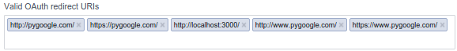

Deploying a Rails 4 app on CentOS 7 production server with Apache and Passenger : Part II 2017
This article is the continuation from Deploying a Rails 4 app on CentOS 7 production server with Apache and Passenger I.
In this tutorial, we'll work on Apache configuration including SSL and social login (Facebook and Twittr).
Following couple of sections (Apache Config I & II), we'll discuss https and Rails 4's forcing an app to use https. So, we you want a quick setup, please just skip I & II sections and directly go to section III.
Here is my conf file (/etc/httpd/sites-available/pygoogle.com.conf):
Rackenv production
<VirtualHost *:80>
ServerAdmin webmaster@pygoogle.com
ServerName pygoogle.com
DocumentRoot /var/www/pygoogle.com/Rails4-PyGoogle/public
ErrorLog /var/www/pygoogle.com/logs/error.log
CustomLog /var/www/pygoogle.com/logs/access.log combined
<Directory "/var/www/pygoogle.com/Rails4-PyGoogle/public">
Options Indexes FollowSymLinks
AllowOverride None
Require all granted
</Directory>
</VirtualHost>
We may also need this:
$ sudo ln -sf /etc/httpd/sites-available/pygoogle.com.conf /etc/httpd/sites-enabled/pygoogle.com.conf
Restart the server:
$ sudo apachectl restart
Now, we're ready to see the app, 'pygoogle'. But unfortunately, I got "Incomplete response received from application" on my web page.
So, I created "SECRET_KEY_BASE":
[sfvue@sf Rails4-PyGoogle]$ bundle exec rake secret RAILS_ENV=production ebbe1a2893c107a...
Put that into ~/.bashrc:
export SECRET_KEY_BASE=ebbe1a2893c107a...
Wow, Another problem!
Browser keep insisting on https not http which we want at this stage. As a result, I got this page:
The reason why the Apache showed me the default page was because I did not have any virtualhost set up for https. So, pygoogle.com request was handled by 'Main' server configuration (/etc/httpd/httpd.conf), and it specified DocumentRoot like this:
DocumentRoot "/var/www/html"
Actually, the 'DocumentRoot' was overrided by /usr/share/httpd/noindex/index.html which was being 'Aliased' by /etc/httpd/conf.d/welcome.conf.
What's forcing my app to https?
Turned out that config/environments/production.rb has the following line which is causing the https problem.
config.force_ssl = true
But no effect at all even after I switched it to "false".
This issue was discussed in Firefox and Chrome keeps forcing HTTPS on Rails app using nginx/Passenger.
If you used
config.force_ssl = truein your environment configuration, and then later turn it off, your browser may still only make connections over ssl.Rails sends an HSTS header when
force_sslis true, which will cause some browsers to only allow connections over HTTPS to the domain in question, regardless of what's entered in the address bar. This setting will be cached by the browser for 1 year by default.See some tips for how to avoid this in this blog post ocmment: http://www.simonecarletti.com/blog/2011/05/configuring-rails-3-https-ssl/#comment-40447
The topic was discussed in What does force_ssl do in Rails? as well.
In order to set up the self-signed certificate, we should install OpenSSL and mod_ssl which is the interface to OpenSSL. The mod_ssl provides support for SSL encryption:
$ sudo yum install mod_ssl openssl
The mod_ssl module will automatically be enabled during installation, and Apache will be able to start using an SSL certificate after it is restarted. In other words, it's ready for use.
Now that Apache is ready to use encryption, it's time to generate a new SSL certificate. Using OpenSSL we will generate a self-signed certificate.
If we are using this on a production server, we are probably likely to want a key from a Trusted Certificate Authority. However, because we are using this for testing purposes, a self-signed certificate is fine.
The certificate will store some basic information about our site, and will be accompanied by a key file that allows the server to securely handle encrypted data.
We will store the server key and certificate in /etc/httpd/ssl.
Let's create the SSL key and certificate files with openssl. Note that the "Common Name" is important, and I used www.pygoogle.com. This will be our server's hostname:
$ sudo openssl req -x509 -nodes -days 365 -newkey rsa:2048 -keyout /etc/httpd/ssl/pygoogle.key -out /etc/httpd/ssl/pygoogle.crt Generating a 2048 bit RSA private key .....................................................................................+++ ....+++ writing new private key to '/etc/httpd/ssl/pygoogle.key' ----- You are about to be asked to enter information that will be incorporated into your certificate request. What you are about to enter is what is called a Distinguished Name or a DN. There are quite a few fields but you can leave some blank For some fields there will be a default value, If you enter '.', the field will be left blank. ----- Country Name (2 letter code) [XX]:US State or Province Name (full name) []:California Locality Name (eg, city) [Default City]:San Francisco Organization Name (eg, company) [Default Company Ltd]:PyGoogle.com Organizational Unit Name (eg, section) []:IT Common Name (eg, your name or your server's hostname) []:www.pygoogle.com Email Address []:
The key and certificate will be created and placed in our /etc/apache2/ssl directory.
Firewall setup for port 443:
$ sudo iptables -A INPUT -p tcp -m tcp --dport 443 -j ACCEPT
Then we need to do is save our rules so that next time we reboot our computer our rules are automatically reloaded:
$ sudo /sbin/service iptables save iptables: Saving firewall rules to /etc/sysconfig/iptables:[ OK ]
Before configuring a separate VirtualHost, in this section, we'll directly work on /etc/httpd/conf.d/ssl.conf file which has been created when we install mod_ssl.
#<VirtualHost _default_:443> <VirtualHost *:443> ... #SSLCertificateFile /etc/pki/tls/certs/localhost.crt SSLCertificateFile /etc/httpd/ssl/pygoogle.crt ... #SSLCertificateKeyFile /etc/pki/tls/private/localhost.key SSLCertificateKeyFile /etc/httpd/ssl/pygoogle.key ...
I added 3 lines:one for VirtualHost directive and the other two are the self signed certificate. The original lines are commented.
At this point, if we use a curl command, we can see the self signed certificate is recognized:
k@laptop:~$ curl --head https://pygoogle.com curl: (60) SSL certificate problem: self signed certificate ...
If we don't have the certificate and we curl for https, we get this:
$ curl --head https://pygoogle.com curl: (60) SSL certificate problem: unable to get local issuer certificate ...
We can use SSL Checker to see if our SSL certificate is working or not:

Now it looks like our certificate is fine.
In the previous section, we put our certificate into /etc/httpd/conf.d/ssl.conf and received https request from there. It was a quick test for SSL setup.
Now we want to turn ssl.conf off and move the stuff under <VirtualHost> into /etc/httpd/sites-available/ as we've done in previous VirtualHost setup. So, here is the new Apache SSL configuration in /etc/httpd/sites-available/pygoogle.conf:
NameVirtualHost *:80
NameVirtualHost *:443
Listen 443 https
RackEnv production
<VirtualHost *:80>
ServerAdmin webmaster@pygoogle.com
ServerName www.pygoogle.com
ServerAlias pygoogle.com
DocumentRoot /var/www/pygoogle.com/Rails4-PyGoogle/public
PassengerRuby /home/sfvue/.rvm/gems/ruby-2.1.3/wrappers/ruby
ErrorLog /var/www/pygoogle.com/logs/error.log
CustomLog /var/www/pygoogle.com/logs/access.log combined
<Directory /var/www/pygoogle.com/Rails4-PyGoogle/public>
AllowOverride All
Options Indexes FollowSymLinks
Require all granted
Options -MultiViews
</Directory>
</VirtualHost>
<VirtualHost *:443>
SSLEngine on
SSLProtocol all -SSLv2
SSLCipherSuite HIGH:MEDIUM:!aNULL:!MD5:!SEED:!IDEA
SSLCertificateFile /etc/httpd/ssl/pygoogle.crt
SSLCertificateKeyFile /etc/httpd/ssl/pygoogle.key
ServerAdmin webmaster@pygoogle.com
ServerName www.pygoogle.com
ServerAlias pygoogle.com
DocumentRoot /var/www/pygoogle.com/Rails4-PyGoogle/public
PassengerRuby /home/sfvue/.rvm/gems/ruby-2.1.3/wrappers/ruby
ErrorLog /var/www/pygoogle.com/logs/error.log
CustomLog /var/www/pygoogle.com/logs/access.log combined
<Directory /var/www/pygoogle.com/Rails4-PyGoogle/public>
AllowOverride All
Options Indexes FollowSymLinks
Require all granted
Options -MultiViews
</Directory>
</VirtualHost>
I added a couple of steps recommended by Deploying an app to a virtual host's root:
To deploy an app to an Apache virtual host's root path, the following steps must be taken:
- Add a virtual host entry to your Apache configuration file.
- The virtual host's document root must point to your application's public subdirectory.
- The Apache per-directory permissions must allow access to this directory.
- MultiViews must be disabled for this directory.
We may set a link to this configuration in /etc/httpd/sites-enabled/:
$ sudo ln -sf /etc/httpd/sites-available/pygoogle.com.conf /etc/httpd/sites-enabled/pygoogle.com.conf
Restart the server:
$ sudo apachectl restart
A couple of the sections shows some issues I faced while deploy our app, and you may want to skip those.
But it was not complete: no stylesheet:
In local, it looks like this which is good:

The Heroku deployed version is also looking OK:
So, I did curl, and it's not finding css as we can see below: Status: 404 Not Found and Content-Type: text/html not text/css:
k@laptop:~$ curl -k --head https://pygoogle.com/stylesheets/application.css HTTP/1.1 404 Not Found Date: Thu, 21 Jan 2016 17:00:19 GMT Server: Apache/2.4.6 (CentOS) OpenSSL/1.0.1e-fips PHP/5.4.16 mod_wsgi/3.4 Python/2.7.5 Phusion_Passenger/5.0.23 Strict-Transport-Security: max-age=31536000 X-Runtime: 0.004774 X-Request-Id: ce949d24-8c03-457d-9036-e231405cc367 X-Powered-By: Phusion Passenger 5.0.23 Content-Length: 1351 Status: 404 Not Found Content-Type: text/html; charset=utf-8
Debugging:

In production, Rails precompiles images, javascripts and stylesheets to public/assets by default. The precompiled copies are then served as static assets by the web server. The files in app/assets are never served directly in production!.
So, we need to precompile our rails app:
$ bundle exec rake assets:precompile db:migrate RAILS_ENV=production
In config/environments/production.rb, I changed one line related to the asset compile :
config.assets.compile = true
It was 'false'. Though it may hurt performance, that's the only solution I found at this point. So, the pages are looking good.

Got familiar error for Facebook login:
"Given URL is not whitelisted in Client OAuth Settings: This redirect failed because the redirect URI is not whitelisted in the app Client OAuth Settings. Make sure Client and Web OAuth Login are on and add all your app domains as Valid OAuth Redirect URIs."
"Given URL is not allowed by the Application configuration: One or more of the given URLs is not allowed by the App's settings. It must match the Website URL or Canvas URL, or the domain must be a subdomain of one of the App's domains."
It works on development version but not on production.
So, I added URI for my domain : https://pygoogle.com to https://developers.facebook.com:
Now, I got the login page from Facebook:
I had a CSRF issue when I tried Facebook login, and got this:
"https://pygoogle.com/o/failure?message=csrf_detected&strategy;=facebook#_=_ "But everything looks good now thanks to the self signed certiface.
Well....
At this point, sending email is not working while authorization/authentication seems to be working including social ones.
Almost there, but still needs more work.
Please visit the repo : Rails4-PyGoogle.
Also, I made a log for errors and fixes in Deploying a Rails 4 app on CentOS 7 production server with Apache and Passenger (Trouble shooting).
Ph.D. / Golden Gate Ave, San Francisco / Seoul National Univ / Carnegie Mellon / UC Berkeley / DevOps / Deep Learning / Visualization